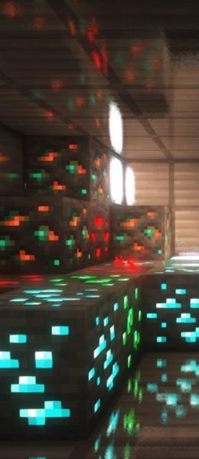
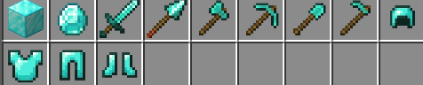
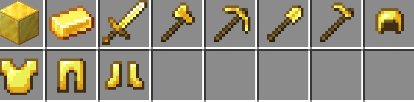
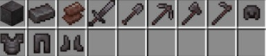
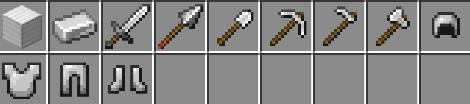
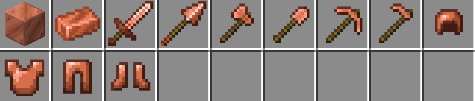

💎 Diamante
Diamantes são mais comuns em camadas bem profundas (principalmente perto do nível -59). Curiosidade: quanto
mais fundo você vai, maior a chance de encontrar — mas também aumenta o risco de cair em lava 😬
🥇 Ouro
O ouro é um dos poucos minérios que aparece MUITO no bioma Badlands (mesa). Lá, você pode encontrar ouro até
perto da superfície — é o melhor lugar pra farmar!
🪨 Ferro
O ferro é mais comum em montanhas. Curiosidade: em versões mais novas, quanto mais alto você sobe em
montanhas, maior a chance de encontrar ferro exposto.
🔥 Netherite
A netherite não é minerada diretamente! Você precisa encontrar detritos ancestrais (ancient debris) no
Nether, geralmente entre os níveis 8 e 22, e depois transformar em netherite. E detalhe: explosões são uma
das melhores formas de encontrar 😏
🔶 Cobre
O cobre aparece bastante em cavernas e é um dos minérios mais comuns. Curiosidade legal: ele muda de cor com
o tempo (oxida), indo do laranja para verde — e você pode “travar” a cor usando cera de abelha 🐝

| Diamante | " |
| Ouro | " |
| Netherite | " |
| Ferro | " |
| Cobre | " |
| Audio minerando |
Esta é a farm essencial para qualquer jogador. Ela utiliza Villagers assustados por um Zumbi. Quando os Villagers entram em pânico, eles invocam um Iron Golem. Como funciona: O Golem nasce em uma plataforma com água, é levado para a lava e, ao morrer, dropa de 3 a 5 barras de ferro. Resultado: Ferro infinito enquanto você estiver por perto.
Como fazer uma farm de minerio de ferro?Localizada no teto do Nether (bioma de Nether Wastes), essa farm usa a mecânica de agressividade dos Zombie Piglins. Como funciona: Você atrai os Piglins para um buraco central usando um ovo de Tartaruga ou apenas batendo em um deles. Eles caem em uma zona de morte (com espadas de varredura ou queda). Resultado: Além de muito Ouro, você ganha níveis de XP absurdos em poucos minutos.
Como fazer uma farm de ouro?O Cobre pode ser farmado através dos Afogados (Drowned). Como funciona: Você pode transformar um spawner de Zumbis em uma farm de Afogados (afogando-os em teias e água). Nas versões recentes, os Afogados têm chance de dropar barras de cobre ao morrer. Dica: Use uma espada com Saque III (Looting) para aumentar a produção.
Como fazer uma farm de cobre?Embora não exista uma "geração" infinita de Netherite, jogadores técnicos constroem World Eaters (Comedores de Mundos). Como funciona: São máquinas voadoras gigantes que lançam TNTs duplicadas para limpar áreas imensas do Nether até a camada da rocha matriz. Resultado: Isso expõe todos os blocos de Detritos Ancestrais da área sem que você precise quebrar um único bloco.
Como fazer uma farm de netherite?Aluna: Maria eduarda coelho da silva 202610700